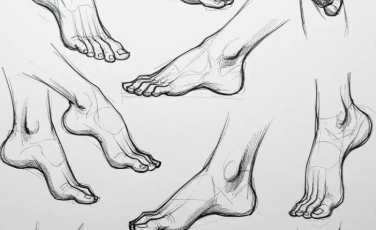

The hardest part of learning to draw is not technique — it is showing up. These three habits take five to fifteen minutes each and compound quickly over a few weeks.

1. The two-minute contour
Pick any object within arm's reach. Set a timer for two minutes and draw its outline without lifting your pen. Do not worry about proportions — just trace what you see. This trains your eye to follow edges instead of drawing symbols (like "eye shapes" or "cup shapes").
Try the same object three days in a row. By the third session you will notice edges you missed before — the rim of a mug, the fold in fabric, the gap between fingers. That is progress you can measure without comparing yourself to anyone else.
2. The thumbnail page
On a scrap of paper, draw six tiny boxes (about 3 cm each). Fill each box with a different composition of the same subject — a tree, a mug, your hand. Working small removes the pressure of "making art" and lets you experiment freely.
Thumbnails are how professionals plan paintings. You are learning to ask: what if I crop tighter? what if the subject sits lower? what if I leave more empty space? Six boxes take less than ten minutes and answer those questions cheaply.
3. The one-line journal
At the end of each day, draw one continuous line that captures something you noticed — the curve of a wave, a roofline, a pet sleeping. Add a single word underneath. Over a month, you will have a visual diary and proof that you are improving.
The line does not need to be clever. It needs to be yours — a record that you looked. On busy days this habit takes ninety seconds and keeps the chain unbroken.
Your first week
Do not start all three habits at once. A simple schedule:
- Days 1–2 — two-minute contour only
- Days 3–4 — add thumbnail page after contour
- Day 5 onward — one-line journal at night; contour or thumbnails in the morning
Missing a day is normal. Resume the next day without "catching up" with a double session — guilt slows more people than bad drawings do.
"Every artist was first an amateur." — Ralph Waldo Emerson
Consistency beats talent every time. Start with one habit this week and add the others when it feels natural.